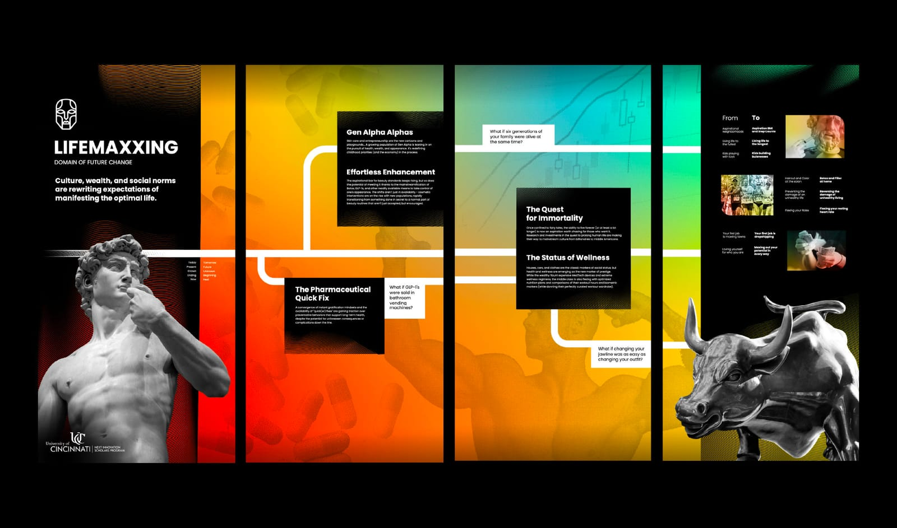
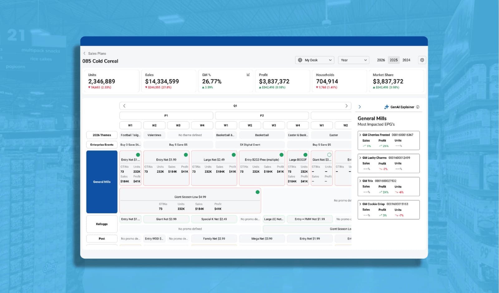
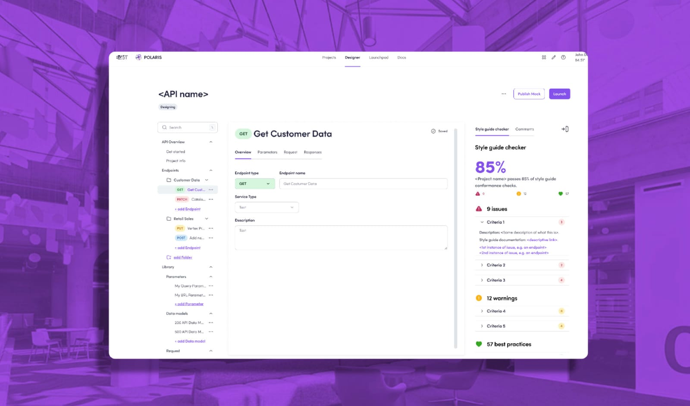
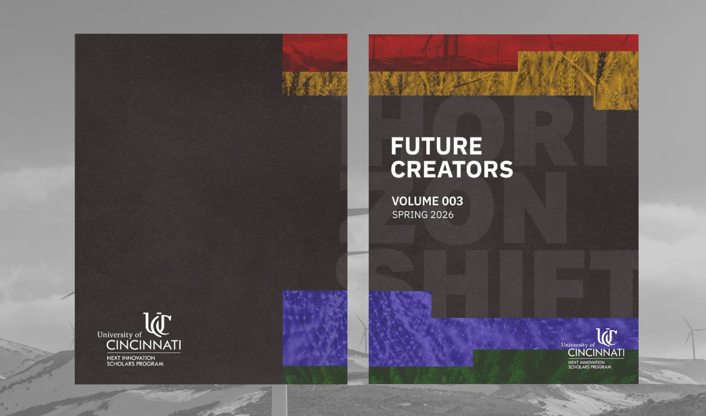
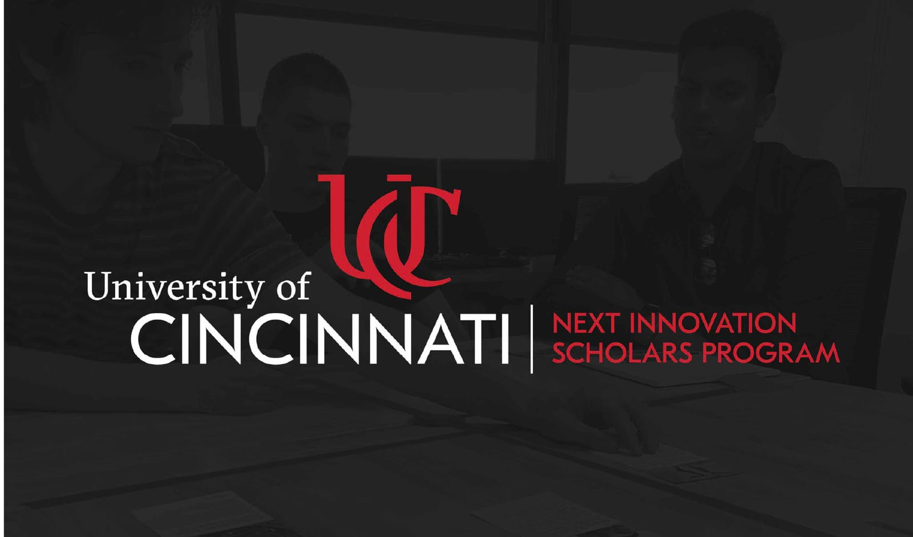
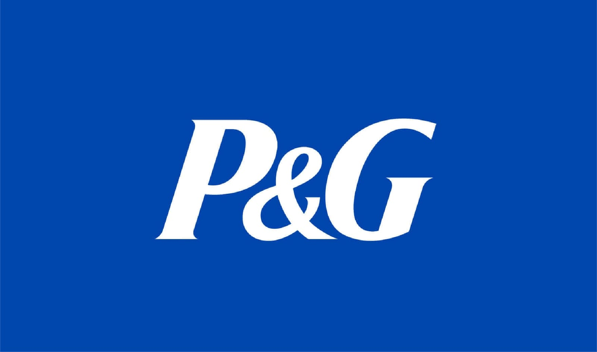
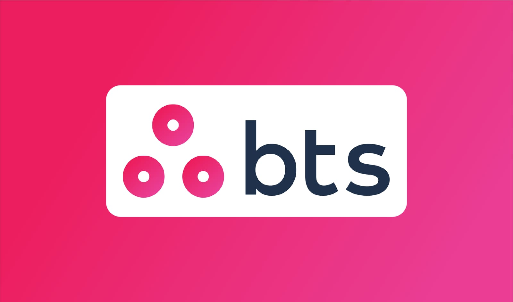
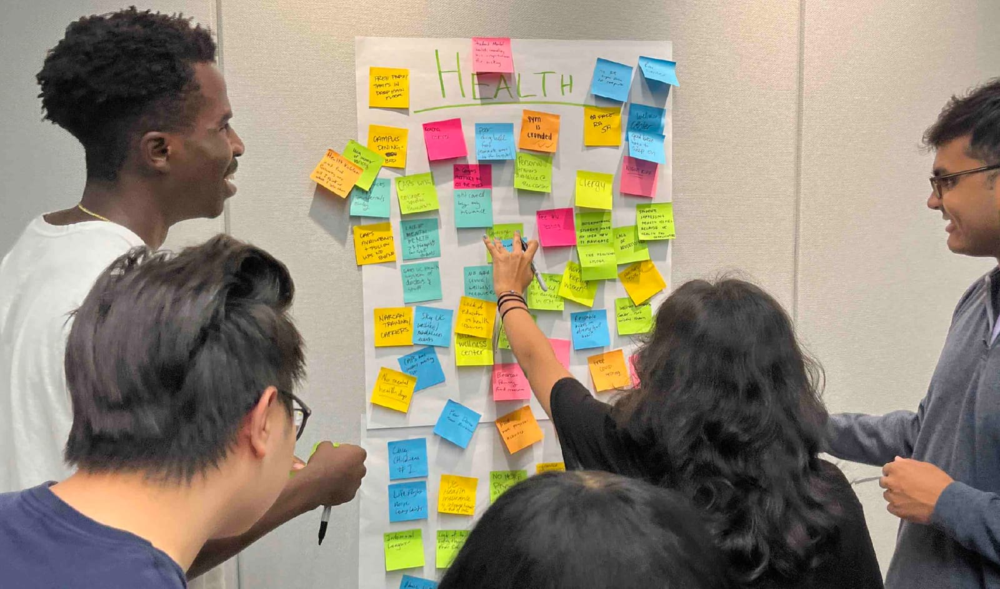

I designed…
Yale Miller is a designer with a focus on UX/UI, Graphic Design, and Design Research.
SELECTED PROJECTS








Yale Miller is a designer with a focus on UX/UI, Graphic Design, and Design Research.







